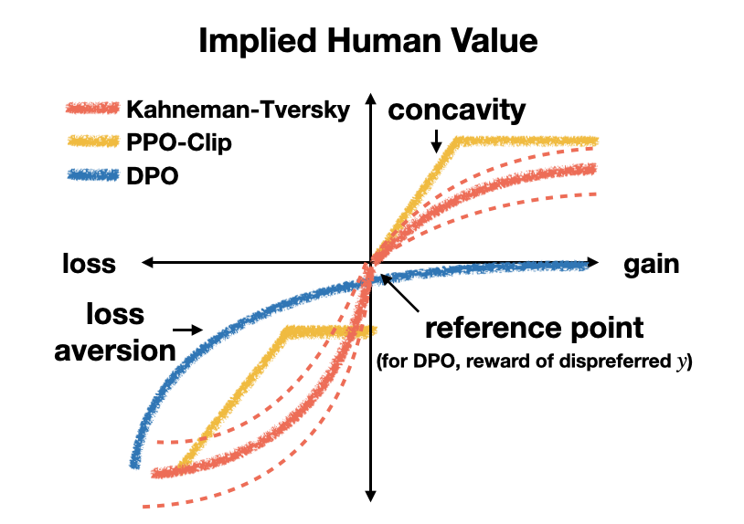

第 9 章 · 偏好数据构建
SFT 教模型"该怎么答"，偏好数据教模型"两种答法里哪种更好"。本章讲透偏好对（chosen/rejected）的四类来源、标注指南与质量控制、长度/格式/自信三类系统性偏差、成对/列表/点评分的选型，并给出 vLLM 本地采样 + judge 打分的完整合成流水线。
1. 偏好数据：给"更好的回答"建立坐标系
一条偏好数据通常是一个三元组：提示词 \( x \)、更好的回答 \( y_w \)（chosen）、更差的回答 \( y_l \)（rejected），记作 \( (x, y_w \succ y_l) \)。注意它和指令数据的本质区别：SFT 样本是绝对标签（这个回答是好的），偏好样本是相对标签（这个比那个好）——标注员不需要定义"完美回答"，只需要做比较，这正是它能规模化的重要原因。
偏好数据直接决定两代对齐算法的成败。训练奖励模型（Reward Model, RM）时，用 Bradley-Terry 模型把"偏好"翻译成标量分数，损失为：
\[ \mathcal{L}_{\mathrm{RM}} = -\log \sigma\big(r(x, y_w) - r(x, y_l)\big) \]即：让好回答的分数高于差回答，且分差越大越好（第 19 章展开）。直接偏好优化（Direct Preference Optimization, DPO）则跳过 RM，用同一批偏好对直接优化策略（第 22 章）。两条路线吃的是同一种数据——所以偏好数据的质量上限，就是整个对齐系统的上限。垃圾进、垃圾出，在偏好数据上尤其绝对。
很多团队把"给单个回答打分"的数据也称作偏好数据，这是概念混用。点评分（一个回答一个分数）与成对比较（两个回答比高低）是两种标注协议，可以在事后互相派生，但采集时的认知负担、一致性与成本完全不同（第 6 节专门对比）。本章说的"偏好数据"，除非特别说明，都指以 chosen/rejected 形式入库的数据。
本节小结：偏好数据是相对标签，通过 Bradley-Terry 损失喂给 RM 或直接喂给 DPO，它是奖励模型与对齐算法共同的数据上限。
2. 偏好对的四类来源
偏好对从哪来？按"谁来判断好坏"划分，共四类来源，图 9-1 给出全景流向。四类不互斥，成熟的数据集往往是多条流水线的组合。
2.1 来源一：人工两两比较（HH-RLHF 路线）
标注员看同一个提示词下的两个回答（有时来自模型拒绝采样，有时一好一坏预构造），选出更好的那个。代表是 Anthropic 的 HH-RLHF（Bai et al., 2022, arXiv:2204.05862）：约 16.9 万对比较（HF 卡面 169,352 行），沿"有用"与"无害"两个轴分别标注，MIT 许可证，是开源偏好数据的基准参考。人工比较的优势是标签最贴近真实人类偏好、能覆盖无法形式化的维度；劣势是贵、慢，且标注员自身的偏差（第 5 节）会原样写进数据。
2.2 来源二：AI 反馈打分构造（UltraFeedback 路线）
用强模型当裁判给回答打分，再把分数差转成偏好对。UltraFeedback（Cui et al., 2023, arXiv:2310.01377）是标准范式：6.4 万条指令，每条从不同模型各采 1 个回答共 4 个，GPT-4 按有用性、事实性、诚实性、指令跟随四个维度打分，整库累计超过 100 万条 GPT-4 反馈；训练时取每条 prompt 内最高分与最低分构造 pair（社区常用的 binarized 版本约 6.1 万对）。它的优点是规模与成本远优于人工、每对都带细粒度分数与理由；缺点是继承了 judge 的全部偏差（第 5 节），且"AI 认为更好"与"人认为更好"之间存在系统差。
2.3 来源三：模型自采样 + 排序（on-policy 路线）
让当前被训练的模型自己对同一提示词采样 N 个回答，再用 RM、judge 或验证器排序，取最优作 chosen、最劣作 rejected。它是迭代式对齐（online DPO、self-play）的燃料：SPIN（Chen et al., 2024, arXiv:2401.01335）甚至让模型上一代自己的输出直接当 rejected。on-policy 的核心价值是分布匹配——chosen 与 rejected 都来自模型的真实输出分布，恰好落在模型"能力边缘"，训练信号最有效；而 HH-RLHF 这类 off-policy 数据中的 rejected 往往差得离谱，对已经不错的模型几乎没有区分度。代价是需要反复采样与评分，工程开销大（第 24 章展开）。
2.4 来源四：规则与验证器构造（可验证正确性路线）
在结果可程序化判定的领域，偏好标签不需要任何人或 judge：数学题用答案匹配、代码题跑单元测试、格式约束用 IFEval 式规则检查。对同一题采样多个回答，通过验证器的作 chosen、未通过的作 rejected——标签正确率接近 100%，这是 Tulu 3 的 RLVR（Lambert et al., 2024, arXiv:2411.15124）与 R1 复现配方（第 26、27 章）的基石。局限同样明显：只适用于可验证窄域，且要提防模型学会"迎合验证器"而非真会做题（reward hacking，第 21 章）。
| 来源 | 代表数据集 | 单位成本 | 标签可靠性 | 主要风险 |
|---|---|---|---|---|
| ① 人工两两比较 | HH-RLHF、HelpSteer2 | 高 | 最贴近人类偏好，一致性约七成 | 标注员偏差写进数据；贵且慢 |
| ② AI 反馈打分 | UltraFeedback、Nectar | 中 | 维度打分可追溯，但存在 judge 偏差 | 长度/格式/自我偏好；AI 与人类偏好存在系统差 |
| ③ 自采样 + 排序 | 迭代 DPO / SPIN 配方 | 中（算力换） | 取决于排序器质量；分布匹配最好 | 排序器偏差会被模型逐代放大 |
| ④ 规则/验证器 | RLVR 类配方 | 低（限窄域） | 域内接近 100% | 覆盖面窄；可能诱发验证器 hacking |
落库时建议给每条 pair 打上"来源"标签：不同来源的 chosen 风格差异巨大（人写的自然、judge 选的长），混训前必须审计分布，第 10 节展开。下面的脚本展示三种主流格式如何读入并统一成 pair。
from datasets import load_dataset
# 1) HH-RLHF：完整对话文本的 chosen / rejected 两个平行文件字段
hh = load_dataset("Anthropic/hh-rlhf", split="train")
print("chosen: ", hh[0]["chosen"][:120])
print("rejected:", hh[0]["rejected"][:120])
# 2) UltraFeedback：一个 prompt 挂 4 个模型回答，每个回答带 4 维分数
uf = load_dataset("openbmb/UltraFeedback", split="train")
row = uf[0]
print([(c["model"], c["overall_score"]) for c in row["completions"]])
# 例：[('gpt-4', 8.5), ('llama-2-70b-chat', 6.1), ('wizardlm', 5.4), ('mpt', 4.2)]
# 3) 由点评分构造 pair：取最高分与最低分，分差不足则视为不可比
best = max(row["completions"], key=lambda c: c["overall_score"])
worst = min(row["completions"], key=lambda c: c["overall_score"])
margin = best["overall_score"] - worst["overall_score"]
if margin >= 2.0: # 分差太小 → 噪声占比过高，宁可丢弃（第 8 节）
pair = {
"prompt": row["prompt"],
"chosen": best["response"],
"rejected": worst["response"],
"source": "ultrafeedback", # 来源标签：混训审计必需
"margin": margin,
}本节小结：四类来源分别把"判断力"交给人类、强模型、排序器与验证器，可靠性递增而覆盖面递减；落库统一打来源与 margin 标签是混训审计的前提。
3. 标注指南设计：什么才算"更好"
偏好标注最大的隐性风险是每位标注员心里有一套自己的"更好"。指南的任务是把这套标准显式化、可裁决化。一份能落地的偏好标注指南包含四块：比较协议（先独立通读两个回答 → 按维度逐一比较 → 给出结论与一句话理由 → 命中边界案例时按优先级裁决）、维度定义与优先级、边界案例库（至少 30 个真实争议例）、tie 政策（第 8 节）。其中最核心的是维度表——表 9-2 给出一份可直接改造使用的模板，维度框架沿用"有用、诚实、无害"（HHH）的工业界共识。
| 维度 | 定义（判"更好"的依据） | 常见误判 |
|---|---|---|
| 无害（最高优先级） | 是否产生人身伤害、违法指导、歧视、隐私侵犯；A 略好但 B 有害时，选 A 而不看其他维度 | 把"礼貌的拒答"误判为"没用"；忽略隐藏在长回答中段的有害细节 |
| 诚实 | 是否编造事实、引用不存在的来源；不确定时是否明说；与用户错误前提冲突时是否指出 | 把"自信流畅"当"可信"；把"承认不确定"误判为"能力差" |
| 有用 | 是否真正解决用户提出的问题；是否覆盖问题的所有部分；行动建议是否可执行 | 答了相邻问题而非所问；长回答掩盖了核心步骤缺失 |
| 格式 | 结构是否匹配任务（代码块/表格/分点是否恰当）；语言是否符合提问语言 | 把"分点+加粗多"当高分——格式仅在与内容匹配时加分 |
| 长度 | 只作为格式的一部分审视：冗长重复扣分，而非加分 | 最大的系统性陷阱：长度与质量相关但绝不等价（第 5 节） |
指南写完不等于能用。标准流程：先用当前指南让 2~3 人标 100 条，逐条复盘分歧、把新争议写回指南，重复 2~3 轮直到一致率稳定（用第 8 章的 kappa 度量），再开放大规模标注。指南要有版本号——每一版指南产出的数据在统计口径上不可直接混用，第 7 章的数据卡片里应记录"此数据集由指南 vN 标注"。
本节小结：指南的本质是把标注员的"自由心证"换成可裁决协议，维度表要写清判优顺序，且必须经试点校准并版本化。
4. 标注质量控制：黄金题、陷阱题与仲裁
有了指南，还需要持续验证"标注员是否真的按指南工作"。四件套如下。
（1）黄金题（golden questions）。答案已知的标准 pair（例如：事实正确、来源可靠 vs 通顺但编造引用），按 5%~10% 的比例随机混入任务流。命中率低于阈值的标注员触发再培训，连续不达标移出项目。黄金题必须定期轮换——它们会通过标注员社区泄露。
（2）陷阱题（trap questions）。专测已知偏差：一长一短但内容相同（测长度偏差）、一个排满加粗分点但答非所问（测格式偏差）、一个语气笃定但事实错误（测自信偏差）。陷阱题比黄金题更锋利，因为它直接度量"这位标注员是否掉进我们要防的坑"。
（3）标注者间一致性。同一条 pair 的多人独立标注一致率是管道健康的总仪表：低于七成就要检查是任务太难、指南含糊还是标注员走神。要建立一个关键预期：人与人的一致率远非理想——Hosking 等人（ICLR 2024, arXiv:2309.16349）系统研究表明，人类偏好标签远非金标准，且断言式的语气会显著影响人对事实性的感知。目标不是 100%，而是把一致性稳定在指南能解释的水平。
（4）仲裁流程。分歧样本交资深标注员或领域专家裁决，裁决结果回写指南并同步给全员。要监控两个指标：仲裁率（长期高于 30% 说明指南有问题）与仲裁翻转率（资深标注员推翻原始标注的比例）——两者都是管道的早期预警信号。
本节小结：质量控制是"黄金题管能力、陷阱题管偏差、一致率管管道、仲裁管闭环"，四个指标都进日报，任何一条恶化先停线排查。
5. 系统性偏差：长度、格式、自信与谄媚
偏好数据最危险的地方不是随机噪声（平均后会抵消），而是系统性偏差——它们会被 RM 学成规则，再被 RL 放大成模型缺陷。图 9-2 画出了最普遍的长度偏差：真实质量随长度几乎不变，但可学到的"偏好信号"随长度单调上升。
四类主要偏差的机理与缓解见表 9-3。两条文献证据必须记住：Gao 等人证明 RM 分数可以被持续过优化而真实质量反而下降（arXiv:2210.10760），Singhal 等人进一步刻画了 RLHF 模型输出变长与胜率的伪相关（arXiv:2310.03716）；缓解侧，ODIN（Chen et al., 2024, arXiv:2402.07319）通过解耦奖励中长度与质量的方向来抑制长度 hacking。
| 偏差 | 典型表现 | 进入数据的途径 | 缓解措施 |
|---|---|---|---|
| 长度偏差 | 更长的回答更常被标 chosen；RM 输出与长度强相关 | 标注员把"详尽"当"更好"；judge 明确偏爱长文 | 同长度分桶内比较；陷阱题检测；训练时用 ODIN 类解耦奖励 |
| 格式偏差 | 带 Markdown 分点、加粗、列表的回答被系统性偏爱 | 标注员与 LLM judge 都把"排版精致"当"质量高" | 指南明确"格式仅在与内容匹配时计分"；用 OffsetBias 类数据训练去偏评审器 |
| 自信偏差 | 语气笃定、结论明确的错误回答胜过严谨但保留的回答 | 断言式语气提升"可信"观感（Hosking et al., 2023） | 黄金题含"自信但错误"样本；诚实维度优先级高于流畅度 |
| 谄媚偏差 | 迎合用户错误前提的回答被标 chosen | 标注员倾向认同用户；judge 亦如此 | 指南加入"指出用户错误应加分"；专设对抗性陷阱题 |
一个反直觉的事实：如果 chosen 与 rejected 来自不同模型（一个强、一个弱），几乎必然伴随长度与格式差——那么"哪个模型更好"与"哪个更长"在数据里就是同一个特征，RM 分不清。UltraFeedback 类构造要在分数差与长度差之间做去相关审查；on-policy 采样则天然回避了这一问题（同一模型采样）。审查方法很简单：算 chosen 与 rejected 的长度差的分布，若几乎全部为正，你的 RM 注定是"长度探测器"。
本节小结：系统性偏差会被 RM 固化、被 RL 放大，长度、格式、自信、谄媚四类都要在数据构造与标注协议两端同时设防。
6. 成对、列表还是点评分：标注协议选型
同一个"偏好"可以用三种协议采集，信息结构与成本差异巨大，见表 9-4。
| 协议 | 产出结构 | 优势 | 劣势 | 代表 |
|---|---|---|---|---|
| 成对（pairwise） | 每题 2 个回答，选一或 tie | 认知负担最低、一致率最高、与 BT/DPO 损失直接对齐 | 信息量少；丢掉"好多少"的强度；N 个回答需 N(N-1) 次两两比较才能全覆盖 | HH-RLHF |
| 列表（listwise） | 每题 N 个回答整体排序 | 一次标注产出 N-1 级信息，可派生多个 pair；天然捕捉"第 1 与第 7"的差距 | N 大时认知负担陡增，中段排序质量差；位置偏差更强 | Nectar（7 答/题） |
| 点评分（pointwise） | 每题每回答打绝对分（可多维） | 可复用（任意两回答可组 pair）、可跨时间积累、支持加权合成单一分 | 绝对分跨标注员不可比；需要锚定训练；分数量纲漂移 | HelpSteer2（5 维 0-4 分） |
点评分路线有一个常被忽视的优势：多维分数可以加权合成，从而在数据层面注入价值排序。HelpSteer2（Wang et al., 2024, arXiv:2406.08673）给出过经验权重：单一质量分可取 \( 0.65 \times \text{helpfulness} + 0.8 \times \text{correctness} + 0.45 \times \text{coherence} \)——正确性的权重最高，这正是"判优顺序"在数学上的表达。选型建议：追求标签质量与快速起步用 pairwise；单条标注预算有限但回答候选多（如 best-of-n 管线）用 listwise；要长期积累可复用资产、或需要多属性条件化（如 SteerLM 路线）用 pointwise。三者可以在同一项目混用，但要用来源标签区分。
本节小结：pairwise 准、listwise 省、pointwise 灵活，按"要质量、要效率还是要资产"选协议，混合使用时必须打来源标签。
7. 多轮偏好与 per-turn 标注
真实产品中的失败大多发生在多轮对话的后几轮：上下文变长、指代变多、约束累积。多轮偏好数据的标注粒度有两种。整段对话级：比较两段完整对话，选出整体更好的一段——它捕捉跨轮连贯性（前后矛盾、遗忘早期约束），但无法定位失败发生在哪一轮。逐轮级（per-turn）：对每个 assistant 轮次单独标注偏好——信用分配精确、一条对话产出多个标签、成本低；但可能选出"单看很好、接不上文脉"的轮次。
工程上的成熟做法是per-turn 为主 + 对话级否决权：逐轮标注偏好，另设一个"整段连贯性"勾选框，凡勾选"跨轮失败"的对话整段回炉，由仲裁员定位问题轮次并降级该轮标签。对智能体场景（工具调用、多步任务，第 31 章），per-turn 还要细化为 per-step：每一步工具调用的正确性可由环境反馈（报错、超时）部分自动标注，这正是第 2 节验证器路线在多轮上的推广。
本节小结：多轮偏好默认按轮标注获得信用分配，用对话级连贯性否决权兜住"局部好、整体崩"的样本。
8. 偏好强度与不可比样本：tie 怎么办
成对标注隐含一个假设：两个回答可比。现实中有大量不可比样本——两个都好、两个都烂、或好得有限。硬造标签的代价可以被量化：在 Bradley-Terry 视角下，标注员的选择是真实偏好概率的一次伯努利采样，
\[ P(y_w \succ y_l) = \frac{e^{r(y_w)}}{e^{r(y_w)} + e^{r(y_l)}} \]当两个回答的真实分数接近时，这个概率逼近 0.5——观测到的标签几乎是抛硬币，混进训练集就是纯噪声。Secrets of RLHF Part II（Wang et al., 2024, arXiv:2401.06080）系统测量了偏好数据中的标签噪声与偏好强度，并提出用强度信息加权训练：分差大的样本权重高、接近的样本权重低。
工程决策树：（1）有分数（judge/RM/点评分）时，设 margin 阈值，低于阈值标为 tie 或直接丢弃——丢弃是安全默认，噪声样本的梯度伤害大于信息收益；（2）纯人工比较时，指南里明确允许 tie 标签，tie 样本单独成池：可用于点评分训练、或 KTO（Ethayarajh et al., 2024, arXiv:2402.01306）这类只吃"单个回答 + 好坏二元标签"的方法——它天然不需要配对，tie 与不可比数据利用率最高；（3）DPO 训练时，tie 样本通常丢弃；若必须保留，可以对称地同时加入 \( (y_a \succ y_b) \) 与 \( (y_b \succ y_a) \) 两条，让它们的梯度相互抵消、等效于正则化，但收益有限，不如丢弃。
tie 率是免费的管道健康信号：对合成构造的 pair，tie 率高说明采样温度太低或回答同质化；对人工标注，tie 率突然升高往往意味着新标注员混入或指南被误解。建议把 tie 率、margin 分布画进数据周报，突变时先停线排查而不是继续灌数据。
KTO 的效用设计建立在前景理论之上：人类对"损失"的敏感度高于等量"收益"，对应到对齐上，把一个糟糕回答稍微变差所受的惩罚，应当大于把一个好回答稍微变好所获的奖励。这个不对称的效用曲线（图 9-3）正是它能够利用"只有 thumbs up/down、没有配对"数据的原因——thumbs up 样本只要"足够好"就给正效用，thumbs down 样本则被更重地惩罚，因此单边标签与 tie 池都能变成训练信号。

本节小结：不可比样本硬标就是噪声——有分数用 margin 阈值过滤，纯人工用 tie 标签加 KTO 类方法消化，tie 率本身是重要的管道监控指标。
9. 实战：vLLM 合成偏好数据完整流水线
把第 2.3 节的 on-policy 路线落成代码：本地 vLLM 起一个模型，对每条 prompt 采样 4 个回答 → judge 逐个打分 → 按 margin 构造 pair → 写入 JSONL。先定义 judge 协议（注意打分维度与表 9-2 对齐，且显式禁止长度加分），再写主流程。
import json, re
JUDGE_PROMPT = """你是严格的评审。分别按以下维度给回答打 1~10 分（整数）：
- 有用性：是否真正解决用户问题、覆盖问题各部分
- 事实性：有无编造事实或不存在的引用；不确定时是否明说
- 表达：结构是否匹配任务、是否简洁（注意：不要因为“更长”而加分）
只输出 JSON，不要输出其他内容：{{"score": 整数, "reason": "一句话"}}"""
def parse_score(text: str, default: float = -1.0) -> float:
"""从 judge 输出中稳健地解析分数：失败返回 -1，由上层丢弃"""
m = re.search(r"\{.*\}", text, re.S)
if not m:
return default
try:
return float(json.loads(m.group())["score"])
except (KeyError, ValueError):
return default
def build_pairs(scores: list) -> list:
"""由 4 个回答的分数构造 pair：只保留分差足够的组合，
分数接近的组合视为不可比（tie），跳过而不是硬造标签"""
order = sorted(range(len(scores)), key=lambda i: -scores[i])
pairs = []
for i in range(len(order)):
for j in range(i + 1, len(order)):
if scores[order[i]] - scores[order[j]] >= 1.5:
pairs.append((order[i], order[j]))
return pairs"""合成偏好数据完整流水线：vLLM 采样 4 答 → judge 打分 → 构造 pair
前置：pip install vllm openai
vllm serve Qwen/Qwen2.5-14B-Instruct --max-model-len 8192
运行：python vllm_pref_pipeline.py # 输出 pref_pairs.jsonl
"""
import json, random
from openai import OpenAI
from judge_protocol import JUDGE_PROMPT, parse_score, build_pairs
client = OpenAI(base_url="http://localhost:8000/v1", api_key="EMPTY")
POLICY = "qwen2.5-14b-instruct" # 被采样的模型（要与 vllm serve 的模型一致）
JUDGE = "qwen2.5-14b-instruct" # 生产建议换用不同家族的模型当 judge，
# 避免“自我偏好”污染（第 5 节）
PROMPTS = [l.strip() for l in open("prompts.txt", encoding="utf-8") if l.strip()]
def sample_k(prompt: str, k: int = 4) -> list:
"""温度 0.8~1.0：太低则 4 个回答几乎相同，构造不出有意义的 pair"""
out = client.completions.create(
model=POLICY, prompt=prompt, n=k,
max_tokens=1024, temperature=0.9, top_p=0.95)
return [c.text.strip() for c in out.choices]
def score_one(prompt: str, resp: str) -> float:
v = client.completions.create(
model=JUDGE,
prompt=f"[问题]\n{prompt}\n\n[回答]\n{resp}\n\n{JUDGE_PROMPT}",
max_tokens=64, temperature=0.0).choices[0].text
return parse_score(v, default=-1.0)
def make_pair(prompt: str):
resps = sample_k(prompt, k=4)
scores = [score_one(prompt, r) for r in resps]
if min(scores) < 0: # 有回答没解析出分数 → 整题作废
return None
pairs = build_pairs(scores)
if not pairs: # 4 个回答质量接近 → 丢弃，不硬造偏好
return None
bi, wi = max(pairs, key=lambda p: scores[p[0]] - scores[p[1]])
return {"prompt": prompt, "chosen": resps[bi], "rejected": resps[wi],
"source": "on-policy-judge", "margin": scores[bi] - scores[wi]}
if __name__ == "__main__":
random.seed(42)
n_kept = 0
with open("pref_pairs.jsonl", "w", encoding="utf-8") as f:
for p in PROMPTS:
item = make_pair(p)
if item:
f.write(json.dumps(item, ensure_ascii=False) + "\n")
n_kept += 1
print(f"got {n_kept}/{len(PROMPTS)} pairs")三个必须做的后处理。（1）偏差审计：统计 chosen 与 rejected 的长度差、Markdown 符号数差——若几乎全为正，说明 judge 在按长度打分，参考第 5 节处理。（2）去污染：prompt 池要与评测基准做重叠检查（第 10 章）。（3）配比：合成对与人工对（如 HH-RLHF 风格）混合时按来源分层抽样，不要让某类来源独大。
本节小结：on-policy 合成偏好数据的四步是高温采样、结构化打分、margin 过滤、偏差审计；judge 与 policy 分模型是防自我偏好的最低要求。
10. 开源偏好数据集对比与选型
第 7 章盘点过指令类数据，这里聚焦偏好类。五个主力数据集的定位差异明显，见表 9-5。
| 数据集 | 规模 | 协议 | 语言 | 许可证 | 定位与出处 |
|---|---|---|---|---|---|
| HH-RLHF | 约 16.9 万对（169,352 行） | 人工成对 | 英文 | MIT | 有用/无害双轴人工比较，经典基准（Bai et al., 2022, arXiv:2204.05862） |
| UltraFeedback | 6.4 万 prompt × 4 回答（binarized 约 6.1 万对） | AI 四维打分 | 英文 | MIT | 细粒度分数 + 理由，可自定派生 pair（Cui et al., 2023, arXiv:2310.01377） |
| Nectar | 约 18.3 万 prompt × 7 回答 | AI 列表排序 | 英文 | Apache 2.0 | GPT-4 对 7 个回答整体排名，listwise 代表（berkeley-nest, HF） |
| HelpSteer2 | 21,362 条点评分（5 维 0-4） | 人工点评分 | 英文 | CC BY-4.0 | 多维属性可加权合成，商用友好（Wang et al., 2024, arXiv:2406.08673） |
| OffsetBias | 约 8.5K 对 | 构造偏差对 | 英文 | BSD-3-Clause | 仅表面因素不同的 pair，用于训练去偏评审器（Park et al., 2024, arXiv:2407.06551） |
选型建议按场景：训练第一个 RM：UltraFeedback binarized（规模与质量平衡，分数可追溯）+ HH-RLHF 无害子集打底；商用项目：HelpSteer2（CC BY-4.0 且多维属性最有工程价值）+ 自建数据；研究评审器偏差：OffsetBias + EvalBiasBench；需要大量 pair 做迭代对齐：Nectar 的 listwise 结构可派生最多 pair 组合。所有数据集以英文为主——中文偏好数据基本只能自建，按第 8 章的中文数据原则补齐。
不同来源的 chosen 有不同的"指纹"：HH-RLHF 的 chosen 是人写的、朴素；UltraFeedback 的 chosen 偏长且结构化；Nectar 的 chosen 来自特定强模型。混源训练 RM 时，RM 可能学到"识别来源"而非"判断质量"——表现为：训练集 pair 准确率很高，换到你自己模型采样的 pair 上立刻失灵。对策：按来源分层抽样控制配比、混源前做长度与格式去相关审查（第 5 节）、上线前必须用在policy 采样出的评测对上验一次 RM 泛化。
本节小结：五个开源数据集覆盖人工成对、AI 打分、listwise、点评分与偏差构造五种形态，按"要什么"选，混源必须分层与做泛化验证。
11. 本章小结
- 本质：偏好数据是相对标签 \( (x, y_w \succ y_l) \)，经 Bradley-Terry 损失喂 RM 或直接喂 DPO；数据质量上限即对齐系统上限。
- 四类来源：人工比较（可靠、贵）、AI 反馈打分（规模大、带 judge 偏差）、自采样排序（分布匹配、算力换）、验证器构造（域内近乎全对、覆盖窄）。
- 指南：维度表 + 判优顺序（无害 → 诚实 → 有用 → 格式/长度）+ 边界案例库 + tie 政策，必须试点校准并版本化。
- 质量控制：黄金题管能力、陷阱题管偏差、一致率管管道、仲裁闭环；人类一致率远非金标准（Hosking et al., ICLR 2024）。
- 系统性偏差：长度、格式、自信、谄媚四类，会被 RM 固化、被 RL 过优化放大；构造端做长度/格式去相关审查，训练端可用 ODIN 类解耦。
- 协议选型：pairwise 准、listwise 省、pointwise 可复用；多维点评分可加权合成质量分（HelpSteer2 经验权重）。
- 多轮：per-turn 为主 + 对话级连贯性否决权；智能体场景细化到 per-step 并利用环境反馈。
- tie 处理：有分数用 margin 阈值过滤，纯人工用 tie 池 + KTO；tie 率是免费的管道健康仪表。
- 合成流水线：高温采样 k 个回答 → 结构化 judge 打分 → margin 过滤 → 偏差审计与去污染；judge 与 policy 分模型防自我偏好。
- 选型：UltraFeedback/HH-RLHF 打底、HelpSteer2 商用、OffsetBias 研偏差、Nectar 做迭代对齐；混源要分层抽样并验证 on-policy 泛化。
数据工程至此完成三大件。下一章 第 10 章 · 数据清洗、去重与质量过滤把第 7~9 章反复提到的清洗、去污染展开成可执行的工程；之后 第 11 章 · 合成数据与 RLAIF 数据化讨论 judge 驱动合成的进阶形态。
问题 1：四类偏好对来源分别把"判断好坏"的权力交给了谁？各自的根本局限是什么？
① 人工两两比较：交给标注员——根本局限是贵、慢，且标注员自身偏差（长度、自信、谄媚）会原样进入数据；② AI 反馈打分：交给强模型 judge——局限是继承 judge 的长度/格式/自我偏好偏差，且 AI 偏好与人类偏好存在系统差；③ 自采样 + 排序：交给排序器（RM/judge/验证器）——局限是排序器偏差会被模型逐代放大；④ 规则/验证器：交给程序化判定——局限是只覆盖可验证窄域，且可能诱发迎合验证器的 reward hacking。
问题 2：为什么"chosen 与 rejected 来自不同模型"的偏好数据训练出的 RM 常常是"长度探测器"？如何在数据层面诊断？
若两个回答来自不同质量的模型，则"哪个更好"与"哪个更长、格式更精致"高度相关（强模型输出通常更长、排版更规整），RM 可以只靠长度/格式特征就拿到训练集上的高准确率，而不必学会真正的质量判断；RL 优化时模型便沿着"变长"这个捷径刷分。诊断方法：统计 chosen 与 rejected 的长度差（或 Markdown 符号差）分布——若几乎全部为正、与 margin 高度相关，说明数据里质量信号与长度信号纠缠，需要做同长度分桶比较或换用同源采样的 on-policy 对。
问题 3：pairwise、listwise、pointwise 三种标注协议各自的核心优劣是什么？如果要做 best-of-n 风格的迭代对齐，你选哪种？
pairwise：认知负担最低、一致率最高、与 BT/DPO 损失直接对齐，但单次信息量少、N 个候选需多次两两比较；listwise：一次标注 N 个回答的整体排序，信息密度最高、可派生多个 pair，但 N 大时中段排序质量差、位置偏差更强；pointwise：绝对分数可复用、可任意组 pair、支持多维加权（如 HelpSteer2 的 0.65·helpfulness + 0.8·correctness + 0.45·coherence），但跨标注员量纲漂移、需要锚定训练。best-of-n 迭代对齐首选 listwise（或 pointwise）：每轮对 n 个候选整体排序/打分，一次标注即可同时产出本轮训练 pair 与下一轮 best-of-n 的选择依据，边际成本最低。
问题 4：合成偏好流水线中，4 个回答的 judge 分数为 [8.2, 7.9, 7.7, 7.5]，margin 阈值 1.5。这题产出 pair 吗？为什么？如果大量此类题目出现，说明什么？
不产出。最高分与最低分之差只有 0.7，低于 1.5 的 margin 阈值，4 个回答全部判为不可比（tie），按第 8 节的决策树应丢弃或进 tie 池，而不是硬造一个随机方向的选择。大量此类情况说明：要么采样温度过低导致回答同质化（提高温度或增大 k 重采样）；要么 judge 打分区间过窄、区分度不足（校准 judge 或改用强制排名而非独立打分）；要么 prompt 本身过于简单，答案空间本来就小（这类 prompt 对偏好训练价值有限，直接从 prompt 池剔除）。
参考文献
- [Bai+, 2022] Bai, Y. et al. "Training a Helpful and Harmless Assistant with Reinforcement Learning from Human Feedback." 2022. arXiv:2204.05862
- [Cui+, 2023] Cui, G. et al. "UltraFeedback: Boosting Language Models with High-quality Feedback." 2023. arXiv:2310.01377
- [Zheng+, 2023] Zheng, L. et al. "Judging LLM-as-a-Judge with MT-Bench and Chatbot Arena." NeurIPS Datasets and Benchmarks, 2023. arXiv:2306.05685
- [Singhal+, 2023] Singhal, P. et al. "A Long Way to Go: Investigating Length Correlations in RLHF." CoRL, 2023. arXiv:2310.03716
- [Park+, 2024] Park, J. et al. "OffsetBias: Leveraging Debiased Data for Tuning Evaluators." 2024. arXiv:2407.06551
- [Wang+, 2024] Wang, H. et al. "Secrets of RLHF in Large Language Models Part II: Reward Modeling." 2024. arXiv:2401.06080
- [Gao+, 2023] Gao, L. et al. "Scaling Laws for Reward Model Overoptimization." ICML, 2023. arXiv:2210.10760
- [Chen+, 2024] Chen, Z. et al. "ODIN: Disentangled Reward Mitigates Hacking in RLHF." ICML, 2024. arXiv:2402.07319
- [Wang+, 2024b] Wang, Z. et al. "HelpSteer2: Open-source dataset for training top-performing reward models." 2024. arXiv:2406.08673
- [Rafailov+, 2023] Rafailov, R. et al. "Direct Preference Optimization: Your Language Model is Secretly a Reward Model." NeurIPS, 2023. arXiv:2305.18290
- [Ethayarajh+, 2024] Ethayarajh, K. et al. "KTO: Model Alignment as Prospect Theoretic Optimization." ICML, 2024. arXiv:2402.01306
- [Hosking+, 2024] Hosking, T., Blunsom, P., Bartolo, M. "Human Feedback is not Gold Standard." ICLR, 2024. arXiv:2309.16349
- [Bai+, 2022b] Bai, Y. et al. "Constitutional AI: Harmlessness from AI Feedback." 2022. arXiv:2212.08073
- [Chen+, 2024b] Chen, Z. et al. "Self-Play Fine-Tuning Converts Weak Language Models to Strong Language Models." ICML, 2024. arXiv:2401.01335
- [Lambert+, 2024] Lambert, N. et al. "Tulu 3: Pushing Frontiers in Open Language Model Post-Training." 2024. arXiv:2411.15124
- [berkeley-nest, 2023] berkeley-nest. "Nectar." Hugging Face Dataset Card, 2023. huggingface.co/datasets/berkeley-nest/Nectar